Курумез.Ком
Реклама
Откуда он взялся
Курумез — «каменный сон»: курум (каменная россыпь, слово из Сибири) и мез (сон). Это язык островов, куда ветер приносит слова из Киева, Афона и Византии, а море потом всё перемешивает. Он звучит как русский, которого коснулась вода. Слова в нём складываются из пяти слоёв, и переводчик подчёркивает каждое изменённое слово цветом того слоя, который его тронул. Нажми на слово справа, чтобы узнать, что с ним случилось.
- Старорусский. Твёрдый знак на конце (), ять в корнях (), і перед гласной, ѳ вместо ф, инфинитив на -ти (), слова вроде азъ и коли.
- Старославянский. Неполногласие (), жд вместо ж (), чь → щь (), юс малый ѧ вместо я.
- Церковнославянский. Окончания -аго () и -тися (), ѡ и є в начале слова, титла (), слова аще, ибо, днесь, паки, зѣло.
- Греческий. Окончания -ос (), -икос (), -отис (), -ис (); слова кай («и»), охи («нет»), числа дио, трия, тесера; приставки гидро-, гео-, пан-, нео-, безударная а- вместо без-; вопросительный знак «;» и настоящие греческие буквы φ χ δ λ π на верхних ступенях.
- Сюр. Слово мезъ значит «сон», а сон в курумезском вообще мезъ. Часть слов заменяется странными родственниками: дом → стѣноколыбель, время → часоплавъ. Приставки: кури- (будто), мур- (шёпотом), нѣбо- (небесный), зерцало- (отражённый). Суффиксы: -мезъ (как во сне), -курумъ (каменный). На последней ступени между словами вклиниваются частицы: мурѣ (кто-то смотрит), рыбо (рыба согласна), ѡ-ѡ (эхо), кура (так говорят на островах), тѣню (тень кивнула).
Три ручки
Письмо решает, какими буквами писать. Гражданское — только современные буквы. Дореформенное добавляет ъ, ѣ, і, ѳ. Церковное добавляет ещё ѧ, ѡ, є, ѯ, ѱ и титла. Эллинство задаёт густоту греческого: от нуля до полной замены части букв греческими. Сюр задаёт, как часто слова превращаются в сны. Кнопка «Перемешать сюр» выбирает другие слова для превращения, а всё остальное остаётся на месте.
Примеры при текущих настройках
Обратный перевод
Кнопка ⇄ меняет направление. Обратно язык переводится приблизительно: словарные слова и правила окончаний он разворачивает точно, а всё, что искажено необратимо (например, ять стал е), угадывается. Внизу слева появляется ряд букв, которых нет на клавиатуре.
| Русский | Курумезский | Слой |
|---|
